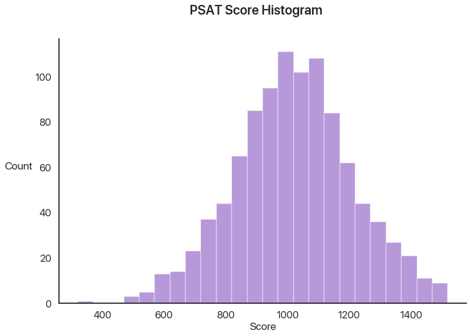
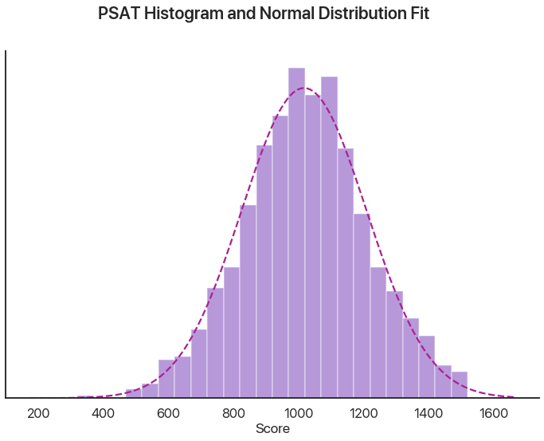
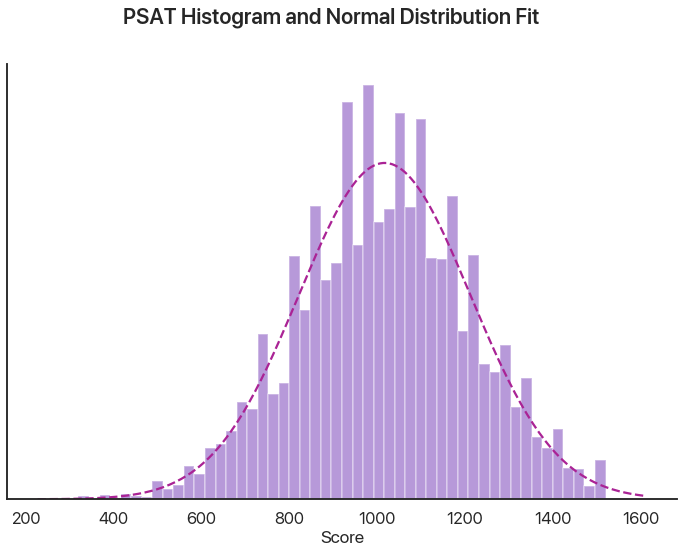
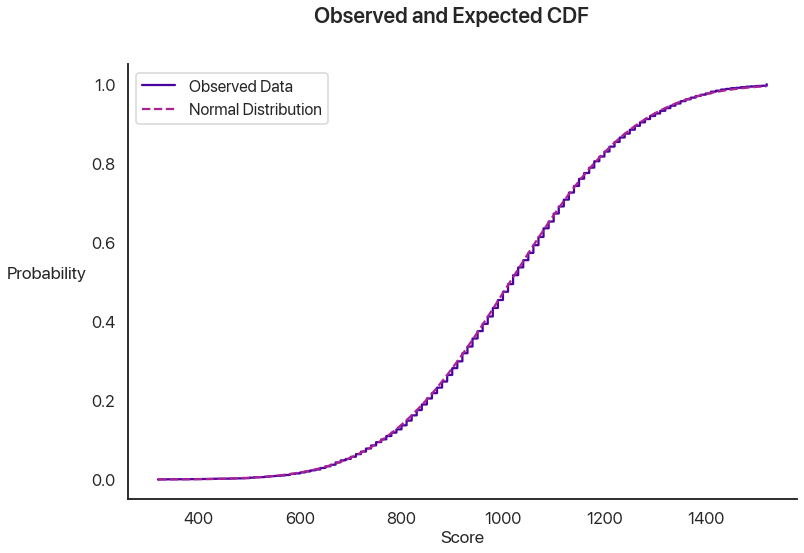
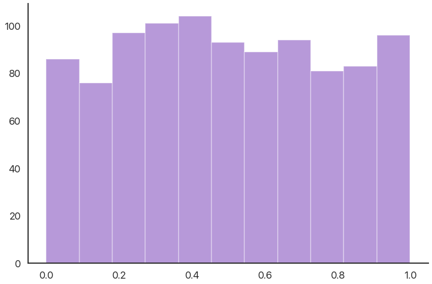
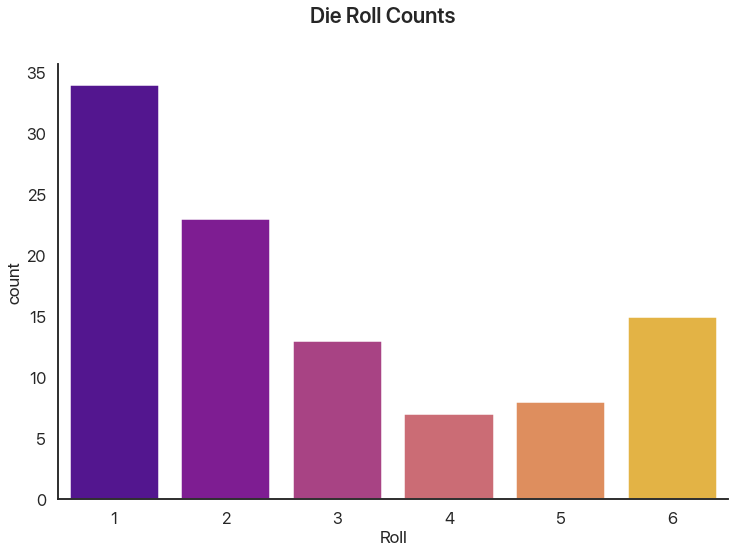
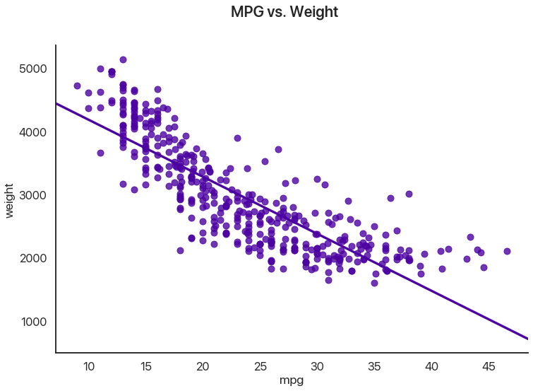
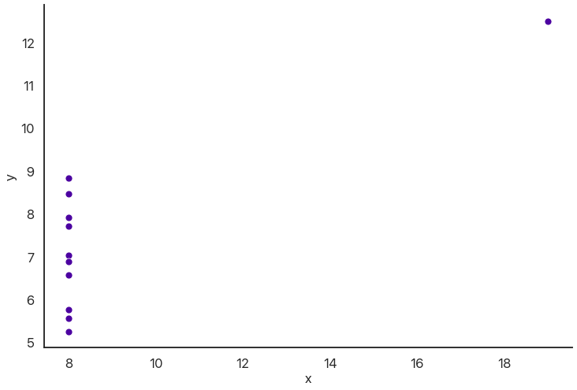

A Whirlwind Tour of Statistical Tests
Hello again!
Let’s say you’ve been working on your dataviz skills, and you think you’ve found an interesting pattern or correlation in a dataset. How can you tell that whatever you’re seeing is significant? How can you distinguish between random variation and legitimate, meaningful results? As it happens, the mathematical branch of statistics is almost entirely devoted to questions like these. I think aspiring data scientists need not be full-fledged statisticians, but everyone should be familiar with the basic statistical tests, when to apply them, and how to interpret their results.
Today we’ll be sojourning through the land of statistical tests in Python, showing how they might be used and interpreted. The goal is not that you’ll be able to apply this all immediately when you need it; instead, the goal is that you can recognize when statistical tests might be useful and be able to find the ones you need. (In an age of the Internet, I find recognition to be much more important than memorizing everything: if you know what to Google, you can figure out how to code it, but you can’t Google something you can’t put into words or something you can’t recognize.)
We’ll be using Python for this, and so the library we’ll apply for these tests is the excellent
scipy.stats module. It contains an enormous variety of statistical distributions and statistical
tests, all implemented using the same basic format so you don’t have to learn 20 different
syntaxes. It has excellent documentation for how the parameters and stuff work, but it’s missing an
explanation of why you’d want to use what it offers: I’m seeking to supplement that information here.
The landscape I’m surveying today—statistical tests to determine if results are significant—is a broad one, so it’ll be useful to first lay a foundation by getting some terminology and sketching a rough taxonomy of the tools we’ll be using today.
What Is a Statistical Test?
A statistical test, in the way I’ll be using it today, means a way of testing a hypothesis. That hypothesis can be almost anything: perhaps it’s that the mean of one set of numbers is higher than another, or that the means the same, or that a set of numbers is normally distributed. Inherent in the idea of a statistical test is that there’s some inherent lack of knowledge: we only have a sample, there’s some sort of variability, randomness is at play, etc. We’re trying to make inferences using a limited set of information: otherwise most of these would be pretty boring. (“Am I taller than my friend from Korea” is a much easier question than “given the limited sample of Americans and Koreans I know, which population is taller.”)
What Do Tests Do?
A very important thing to keep in mind is that statistical tests don’t prove that hypotheses are true. That is, they can’t by their nature confirm one specific pattern given the infinite possibilities inherent in any judgment like that. Instead, statistical tests disprove false hypotheses. They can say that a result would probably never occur by chance, but they can’t tell you why that result did happen. This is an oft-misunderstood fact about statistics. The key in making inferences is to set up your hypothesis in a way such that you can give strong evidence for it by disproving something else. For example, in our earlier example of testing population means, we can say that it’s likely that Americans are taller than Koreans because, assuming that the populations had the same height and I knew a random sample of both, the chance that I would observe whatever I do is really small.
This hypothesis—that whatever pattern I’m seeing is not due to the pattern I hypothesize but instead due to random chance—is called the null hypothesis. It’s really what all of these statistical tests are testing. I’ll make sure to keep it very clear what hypotheses match up with which tests.
Assumptions
This brings us to our next point: of course, there’s no way I’d actually know a random sample of either of those populations. Almost any statistical test has one or more assumptions about its data, and these are also often misunderstood or not applied correctly.
This means that we should really think of any errors we have in two ways: known unknowns, and unknown unknowns. Just like in American foreign policy, it’s the unknown unknowns that you have to watch out for. Known unknowns are the errors that are reported by our tests: the statistical errors that result from getting lucky or unlucky. Unknown unknowns are the errors introduced by bad methodology, untrue assumptions, or unaccounted-for statistical effects. (Elsewhere on this blog I’ve talked about regression to the mean: this is an excellent example of an effect that can make tests that seem worthwhile actually completely useless.)
Of course, we don’t live in a perfect mathematical world and some error is inevitable. However, keep in mind that the further we stretch our assumptions the less useful our tests are, and our tests won’t be able to report that uncertainty to us. Every significance level or test statistic is conditioned on our applying statistics properly, our data coming from a good source, etc. I stress this because of just how easy it is to blindly trust numbers that come out of the computers to 10 decimal places. Keep in mind that what we get out is only as good as what we put in, and Python isn’t magic: it can’t tell us that our data is bad or that our hypothesis is misleading or incorrect. What that out of the way, how do we interpret our results assuming that our inputs are good?
Interpretation
Tests will usually give a test statistic, some calculation based on our data, and that test statistic will usually follow a test distribution. Given those two things, we can determine how unlikely such a test statistic is given the assumptions of the null hypothesis. This, in turn, gives us a p-value: the likelihood of observing the results we did assuming the conditions of the null hypothesis. This is another commonly misunderstood but very important concept in statistics. This is definitely not the chance we’re right. It’s, at best, the chance we aren’t completely wrong: the chance that anything we’re seeing is entirely due to random variation. In the sciences, a value of \(0.05\) is generally considered significant, although this changes a lot depending on context. (One way of interpreting this is that, if you pick \(0.05\) as a cutoff, one out of every twenty tests you run will be wrong and you won’t know. This means that running 500 tests will produce some significant results purely by chance!)
OK, the philosophizing is over. Let’s get to the test themselves!
The Landscape of Statistical Hypotheses
Obviously there are a lot of statistical tests out there: I couldn’t possibly summarize all of them here. However, these are the ones I’ve seen the most often in scientific publications and my own work, and my hope is that they’ll be the ones you run into the most as well. These are also an excellent foundation for more complicated tests that you might run into in the future, like ANOVA and other tests that work on multiple populations in a more complicated way.
There’s a couple of very useful kinds of questions we’re going to ask: these pop up all the time in science and statistics, and so it’s reasonable to assume that most patterns you see can somehow be corroborated by using one of these tests. We’ll break these up into a couple of categories.
- I have one set of data and I want to test if it follows some distribution.
- I have one set of data and I want to say something about its mean.
- I have two sets of data in the same units. I want to compare their means.
- I have two sets of data in pairs. I want to say something about how they’re related.
Testing the Distribution of a Single Dataset
Normality
From now on, assume we’ve imported the Python libraries numpy, pandas, seaborn, and scipy.stats as
np, pd, sns, and stats respectively.
The reason I’m doing this one first is because it tends to be a prerequisite for other tests: a lot of tests assume normality, and you should always check your assumptions.
We’ll start with the basics. Let’s say we have a dataset of 1000 PSAT scores. Let’s show a couple numbers from that dataset and make a histogram:
print(psats[:5]) # just to see a few numbers
array([1010., 770., 1340., 1070., 1310.])

I think this data seems like it follows a normal distribution. As it happens, a lot of statistical tests require that, so let’s see how good that assumption is with our first test. As it happens, there are several normality tests, but the one we’ll use and the one I’d generally recommend is the Shapiro-Wilk test:
stats.shapiro(psats)
(0.9979366660118103, 0.2571161985397339)
This outputs a combination of test statistic first and the p-value second. I haven’t said what our null hypothesis is yet, so interpreting this isn’t possible. In this case, our null hypothesis is that the data was drawn from a normal distribution. Note that a p-value above 0.05, as in this case, doesn’t mean we can positively prove it is normal, but rather that we haven’t proved it isn’t: again, mind the double negative because it’s very important. In this case, we can interpret this as saying that it’s reasonable to assume that our data is normal or normal-ish. A graphical comparison makes this seem pretty logical:

It isn’t perfect, but with 1000 numbers it isn’t expected to be. Let’s say we now have 10,000 points. What does the Shapiro-Wilk test say now?

# now with more data
stats.shapiro(psats)
UserWarning: p-value may not be accurate for N > 5000.
(0.9985979795455933, 9.862207406285961e-08)
We can see that the histogram has some weird spikes and our test now returns an incredibly low p-value: our PSAT test data is definitely not normally distributed. When I was trying to convince you the reader that normality was a valid assumption to make, in my series on Bayesian statistical fallacies, I used a CDF plot (plotting how many values were below a given threshold versus how many would be expected to under the assumption of normality) to make my point. What does that plot show here?

Those are actually two different curves: it’s nearly perfect! What’s the issue here?
scipy.stats is smart, and it tried to warn us about this. Essentially, the issue is that, given
enough data, even the tiniest difference is significant. Our data is definitely not 100% normally
distributed: it has a minimum and maximum, and it can only take values that are multiples
of 10. Most of the time, when we ask if something is normal, we really mean if it’s close
enough—if the difference is small. You can see that the test statistic is actually very similar to
last time. This is an indication that the difference is small in absolute terms, but that given
10,000 data points it should still never happen. The upshot of this is:
- Use the Shapiro-Wilk test to determine if a dataset is reasonably close to a normal distribution.
- For small populations, use the p-value to determine if your assumption is valid.
- For larger populations (I’d say around 1000 numbers or more), use the test statistic instead: the p-value gives misleading results.
For the record: the data I used was generated by sampling from a normal distribution, rounding to the nearest 10, and ensuring that all of the points were between 320 and 1520. For most purposes I’d consider that close enough to a normal distribution to model that way: your mileage may vary.
I promise most of these aren’t going to be as tricky!
Other Distributions
“But Nicholas”, I hear you ask, “why couldn’t we just use this test for testing normality?” You could: it’s just that the Shapiro-Wilk test is more precise and will detect smaller differences. We’ve already covered that the test’s precision is more of a curse than a blessing, though, so it’s not really that big of a difference.
If you want to test a different distribution, you can use the Kolmogorov-Smirnov test, a very general and useful tool. It has the same caveat as above (it can detect tiny differences with large enough sample sizes), but since we just made a big point about that I’ll gloss over it this time.
scipy.stats distributions have all sorts of useful functions: for example, I used the normal one to
make the expected CDF I used in the plot above. Check the docs to learn more.
Let’s say we have a bunch of data between 0 and 1 and we want to know if it’s uniformly
distributed. (Sorry, I couldn’t think of a cool real-world example for this one.) scipy.stats has a
ton of statistical distributions we can use (the normal distribution is norm, by the ways), and as
it happens it has uniform premade for us.
The way the Kolmogorov-Smirnov test works is by essentially making the CDF plot I showed above, and
then finding the largest vertical difference and comparing that to what would be expected by
chance. The reason I’m mentioning this is because this test works well for any combination of
statistical distributions and datasets you want to test against. scipy.stats will happily estimate
your CDF from your data if you only have a sample, but it will use the distributions to be more exact.
Here’s a histogram of our data (1000 numbers) and the output of our test. The function is pretty
smart: we can pass in any CDF we want, or we can pass in the name of a distribution. (To use a
second set of numbers, use stats.ks_2samp.) It’ll automatically fit the distribution if there’s
anything to fit, or we can pass in the arguments we need as a tuple. (The inputs are loc and scale,
to represent a uniform distribution between loc and loc + scale. Here it doesn’t actually matter
whether we add them, because scipy will fit this distribution anyway.)

stats.kstest(data, 'uniform', (0, 1))
KstestResult(statistic=0.025222960578, pvalue=0.54801947328)
The null hypothesis is that the data was drawn from this distribution: again, there’s an inherent double negative. Here the p-value is quite high, which makes sense: this data was actually generated by sampling from a uniform distribution, so a result like this is very likely to occur by random chance.
Discrete Distributions
What if our distribution isn’t continuous? For this, we can use the high-school stats classic: the Pearson’s chi-squared test. Calculating this by hand isn’t actually that hard, but we didn’t learn to use Python so we could write things out like chumps! The chi-squared test (or \(\chi^2\) if you want to be fancy) assumes that your observing something with a fixed list of possibilities, and you have some collected counts for those observations and some expected counts given a distribution. We want to test against the null hypothesis that our data was generated from this distribution. There’s one assumption we should check: the frequencies we’re looking for can’t be too small. The rule of thumb is that your observed and expected frequencies should be over 5 in each category.
This is very common for catching cheating or funny business! Let’s say you think a die is loaded. We can imagine rolling it 100 times (no, I’m not actually doing this, that’s what computers are for). Let’s plot the roll frequencies we get:

There’s some variation, but that’s to be expected: ask any board game player and they’ll tell you probability doesn’t always even out. The question is: can we show that this wouldn’t happen by chance?
# counts is the data I, um, "collected"
print(counts)
expected = [100 / 6] * 6
print(np.round(expected, 1))
stat, p = stats.chisquare(counts, expected, 5)
print('Stat: ', round(stat, 2))
print('p: ', p)
[34 23 13 7 8 15]
[16.7 16.7 16.7 16.7 16.7 16.7]
Stat: 31.52
p: nan
Our p-value was so low scipy gave up! This happens a lot with this test: it’s very precise and gives
very large values for small differences. Here, we can be almost certain that this die is
loaded. (We’re correct in this case: I simulated it so 1 had a 40% chance and 2 had a 20%
chance, giving the rest 10% chances.)
Testing a Threshold For a Single Dataset
This problem is another classic statistics question. Let’s say I’m arguing with my friend and they claim that soccer games are lame because, on average, there’s only two goals a game. Let’s test this claim against some recent Champions League games as of this writing:
Scores from ESPN.
# from November 5-6, 2019
total_scores = [
2, 3, 2, 3, 6,
1, 6, 4, 0, 2,
5, 8, 3, 4, 2,
5
]
The test we’re going to use is called the Student’s t-test, named for William Sealy Gosset who wrote under the pseudonym Student. It’s pretty simple: it tests the null hypothesis that the mean of the whole population we’re sampling is equal to the given value.
stat, p = stats.ttest_1samp(total_scores, 2)
print("p =", round(p, 3))
p = 0.012
This is indicative that our friend is wrong: the data doesn’t support it. Note that this is two-sided: it doesn’t claim whether the true mean is larger or smaller. It’s a good rule to use two-sided tests in most cases: it’s not usually fair to assume the mean is above 2 or below it.
Comparing Means From Two Datasets
This test can be extended to work for two distributions. There’s actually two distinct ways this often pops up that we should distinguish: paired and unpaired. In paired tests, the two datasets are the same size and correspond with each other. An example of this would be testing whether a tutor significantly improved the SAT scores of their tutees. In the unpaired kind, we have different populations (perhaps of different sizes) and we want to compare their means. An example of this would be trying to determine if Champions League games have more goals than Premier League games. This is pretty simple to do in Python and has a familiar form:
# "ind" for "independent" meaning "unpaired"
stats.ttest_ind(champions, premier)
# "rel" for "related" meaning "paired"
stats.ttest_rel(before, after)
There are some assumptions here. We’re assuming that the data have the same variance (regardless of whether we know it), and that they’re distributed in the same way. This generally holds up well in real life, and it isn’t that far off if you bend the rules a little, but it’s worth remembering.
Relational Statistics
Let’s say we have some paired data in different units and we want to figure out if they’re related. An example of this would be asking whether SAT scores correlate with freshman GPA in college. The example we’ll use is gas mileage vs. weight for some car models:
This dataset comes with seaborn: sns.load_dataset("mpg") is all you need.

I’ve drawn in the regression line. Note that data can have all sorts of relationships, and it’s a very difficult question to answer how two sets of numbers relate in general. We’re going to limit ourselves to a single feasible version of this problem: do higher values of miles per gallon correlate with lower values of weight, as they seem to here?
We can use several tests for this: the most common is Pearson’s correlation coefficient, or \(r\). This assumes that the \(x\) and \(y\) datasets are normally distributed, but fudging this a little doesn’t usually have too many problems, at least when you combine it with a graphical test like the one above. Let’s see what comes out:
# assuming we've loaded our data into df
stats.pearsonr(df['mpg'], df['weight'])
(-0.831740933244335, 2.9727995640500577e-103)
The test statistic here is quite common and easy to interpret on its own: -1 means perfect negative correlation (the data is perfectly linear with a negative slope), 0 means no correlation whatsoever, and 1 means a perfect positive correlation (the data is perfectly linear with a positive slope.) This is often squared to get the common \(R^2\) statistic, which is usually interpreted as the percentage of the variance in the y-values that can be explained by the x-values.
How extreme is this \(r\) value? Well, the p-value has to be some sort of record! The chance that this would happen by chance if miles per gallon and weight really had no correlation (the null hypothesis) is astronomically low, which makes sense when we see the data.
I should really stress that this is best used in combination with visuals. You can get really nonsensical results otherwise:
stats.pearsonr(x, y)
(0.8165214368885029, 0.002164602347197218)
So there’s a relationship, right? Well, maybe not:

Wrapping Up
This provides a nice segue into my final point: it’s easy to overuse statistical tests or apply them in situations where their results are meaningless. These tests are best used to confirm whether a result you already hypothesize is attributable to chance.
This is a large part of why the morning show “coffee cures cancer” lines are so misleading. If you track what 500 people eat for a year, and then test every possible correlation of food with disease incidence, you’ll almost certainly find a couple significant relationships by random chance. Then, if you publish those results as if they were your hypothesis, you have a significant result!
The solution to this is replication: use tests to confirm something, not to figure out what to think. That part’s something you have to do first, or you can’t use the results you get.
Being careful to verify rather than hypothesize with testing also avoids the problem of p-hacking: essentially, using lots of statistical tests and then claiming you had as your hypothesis any of the ones that happen to come out significant. This essentially abuses the fact that people treat p-values as some sort of divine revelation of significance rather than as a probabliity. This is an easy trap when the actual calculations are so easy!
So, to conclude:
- Shapiro-Wilk tests normality, but you probably don’t really mean “is my data perfectly normal” so take it with a grain of salt.
- Kolmogorov-Smirnov tests any distribution, with the same caveat as above: the real world is not all exact statistical distributions.
- Chi-squared tests are used for discrete distributions and checking if results are too good to be true.
- T-tests are used for reasoning about the mean of a sample.
- Pearson’s correlation can be used to reason about the linear relationship of two variables, but you should be looking at your data first!
- Don’t test to figure out what you want to claim: claim something, and then test it.
Hope this helps any of you get through your stats classes or check if a pattern you find is significant. If you’ve liked this, you can see the other posts on this blog to see Python data science in action or to learn about visualizing your data in Python.
Comments
Comments powered by Disqus